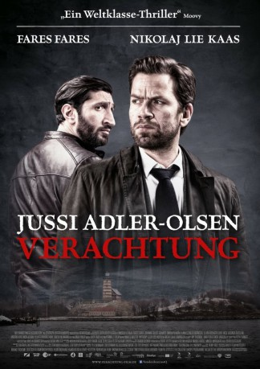

#12090 Jussi Adler-Olsen 4 - Verachtung
 gesehen am 01.12.2019
gesehen am 01.12.2019
 
 IMDB-Wertung: 7.4 / 10
IMDB-Wertung: 7.4 / 10  Metascore: 0
Metascore: 0 
Carl Mørck (Nikolaj Lie Kaas), seines Zeichens Ermittler des Sonderdezernates Q für ungelöste Kriminalfälle, nimmt sich ein neues altes Mysterium vor: Im Jahr 1987 verschwanden mehrere Menschen spurlos - und sie alle schienen mit derselben Person in Verbindung zu stehen. Um den Fall neu aufzurollen, müssen Carl und sein Partner Assad (Fares Fares) auf eine Insel reisen, auf der einst Frauen lebten, die von der Gesellschaft verstoßen wurden. Nahm eine dieser Frauen vielleicht grausame Rache an ihren Peinigern?
Jahr: 2018
Dauer: 118 Minuten
FSK: 12
Land: Dänemark Studio: NFP Marketing & DistributionTonspuren: DD5.1 - ,
Untertitel: Deutsch,
Auflösung: 1080p (1920x808) Größe: 9277 MB
Genre: Thriller, Krimi, Mystery
Regisseur: Christoffer Boe
Drehbuch: Jussi Adler-Olsen, Nikolaj Arcel, Bo Hr. Hansen, Mikkel Nørgaard
Soundtrack: Anthony Lledo, Mikkel Maltha
Darsteller:
 Nikolaj Lie Kaas als Carl Mørck
Nikolaj Lie Kaas als Carl Mørck Fares Fares als Assad
Fares Fares als Assad Søren Pilmark als Marcus Jacobsen
Søren Pilmark als Marcus Jacobsen- Fanny Bornedal als Nete (ung)
- Clara Rosager als Rita
- Amanda Radeljak als Nour
 Anders Hove als Curt Wad (ældre)
Anders Hove als Curt Wad (ældre) Nicolas Bro als Brandt
Nicolas Bro als Brandt- Elliott Crosset Hove als Curt Wad (ung)
- Anders Juul als Gunnar
- Vibeke Hastrup als Mie Nørvig
- Trine Pallesen als Mette
- Camilla Lau als Louise
- Joen Højerslev als Fisker
- Henrik Vestergaard als Netes far
- Lado Hadzic als Ejendomsadministrator
- Anders Brink Madsen als Håndværker 1
- Regitze Estrup als Sygeplejerske
 Wanda Perdelwitz als Receptionist 1
Wanda Perdelwitz als Receptionist 1 Martin Boserup als Politimand
Martin Boserup als Politimand- Diêm Camille G. als Police Officer
- Camilla Kold Krohn Gade als Pige på Sprogø
- Johanne Louise Schmidt als Rose
- Luise Skov als Gitte Charles
 Birthe Neumann als Nete (ældre)
Birthe Neumann als Nete (ældre)- Michael Brostrup als Børge Bak
- Marianne Høgsbro als Beate Wad
- Nastja Arcel als Else Munk
- Jela Natius Abildgaard als Simone
- Sofus Rønnov als Tage
- Asil Al-Asadi als Nours veninde
- Ulas Kilic als Nours far
- Susan A. Olsen als Retsmediciner
- Anders Nyborg als Lønberg
- Lennart Falk als Håndværker 2
- Jesper Groth als Politibetjent
- Elisabeth Thiis als Journalist
- Jan Brandi als Rocker
- Bent Larsen als Billist
- Per Tofte Nielsen als Police-technician
- Pi Svenstrup als Sygeplejeske Danevang
- Camilla Thomsen als Receptionist 2
- Maria Esther Lemvigh als Køkkendame
- Clara Sanvig als Pige Sprogø 1
- Johanne Bie als Pige Sprogø 2
- Lars Phister als Fodgænger
- Poul Erik Skammelsen als News Presenter
- Karin Cruz Forsstrøm als News Presenter
- Morten Bjørn als Police Officer
- Morten Feldt als Kriminalbetjent
Datei: X:\4-Tetralogie(A-K)\Jussi Adler-Olsen\Jussi Adler-Olsen 4 - Verachtung (2018, FSK12, 1920x808).mkv seit 01.12.2019
Festplatte: HD Collection-3(N-Z)-6(A-Z)
 Es gibt insgesamt 7 Filme in der Gruppe '4-Tetralogie(A-K)\Jussi Adler-Olsen'
Es gibt insgesamt 7 Filme in der Gruppe '4-Tetralogie(A-K)\Jussi Adler-Olsen'